Sources
Evidence library
In brief
Every page this site quotes, by year. Tap an image to zoom in, page through the source, or download it. Each image is a cropped copy of a public record; the only thing added is an orange outline (or margin marks) around the line that matters.
We host only the relevant pages of large reports (“excerpts”) and link to the full original wherever the town or state publishes one. Newspaper articles are linked from the Sources page, never copied here.
Excerpts by year
1976
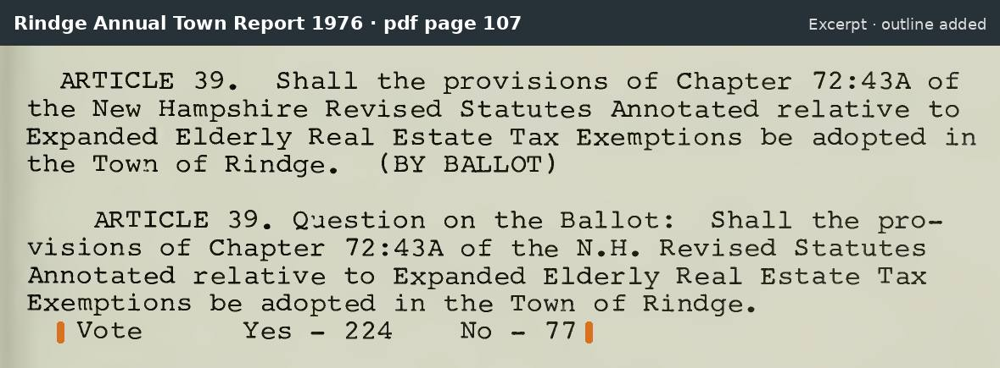
Open the image:1976 Town Meeting, Article 39: Yes 224, No 77
Rindge Annual Town Report 1976, pdf page 107 · Excerpt (PDF) · Original
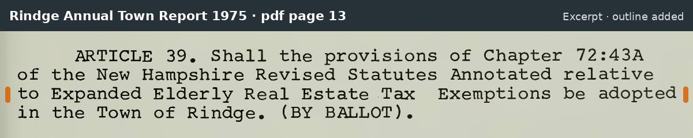
Open the image:1976 warrant, Article 39 (in the 1975 report)
Rindge Annual Town Report 1975, pdf page 13 · Excerpt (PDF) · Original


1978
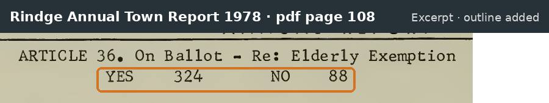
Open the image:1978 Town Meeting, Article 36: Yes 324, No 88
Rindge Annual Town Report 1978, pdf page 108 · Excerpt (PDF) · Original
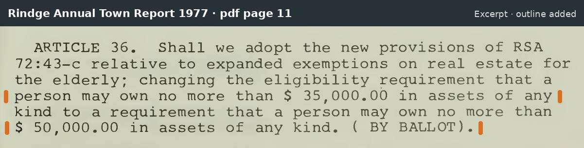
Open the image:1978 warrant, Article 36: assets limit $35,000 to $50,000
Rindge Annual Town Report 1977, pdf page 11 · Excerpt (PDF) · Original


1980
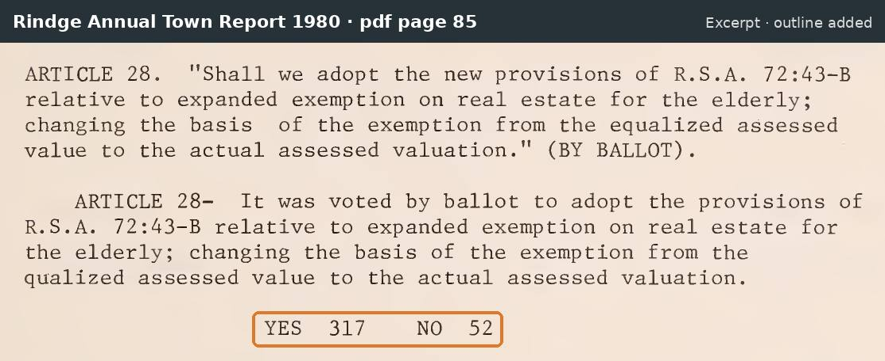
Open the image:1980 Town Meeting, Article 28: Yes 317, No 52
Rindge Annual Town Report 1980, pdf page 85 · Excerpt (PDF) · Original

1983
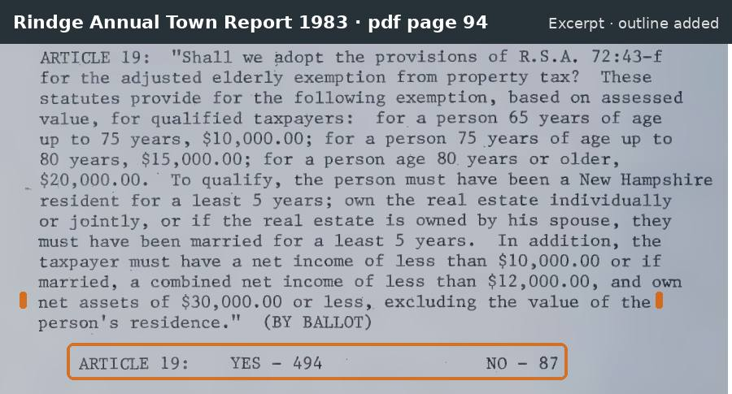
Open the image:1983 Town Meeting, Article 19: Yes 494, No 87
Rindge Annual Town Report 1983, pdf page 94 · Excerpt (PDF) · Original
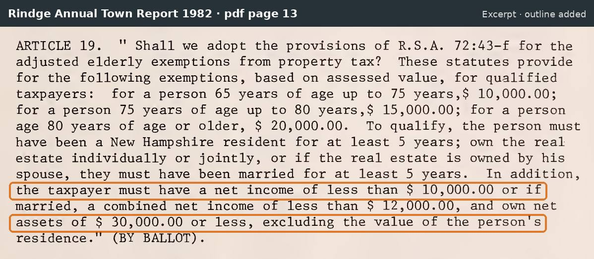
Open the image:1983 warrant, Article 19 (in the 1982 report)
Rindge Annual Town Report 1982, pdf page 13 · Excerpt (PDF) · Original


1990
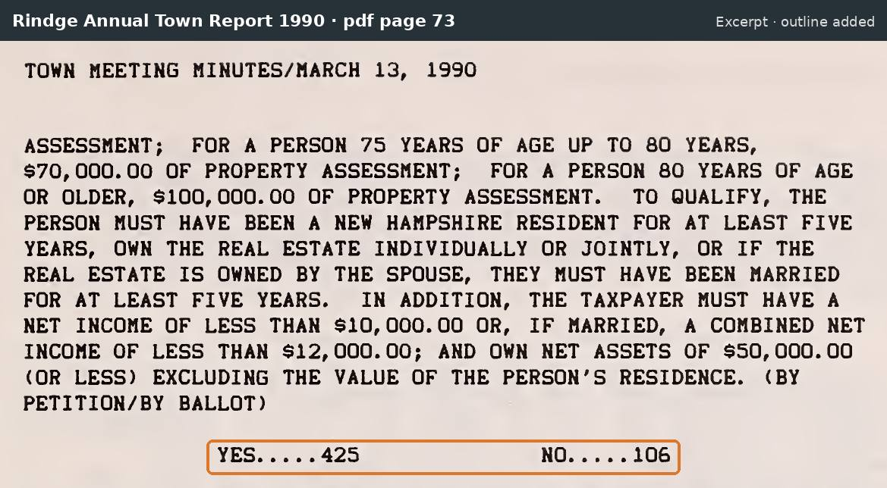
Open the image:1990 Town Meeting, Article 27: Yes 425, No 106
Rindge Annual Town Report 1990, pdf page 73 · Excerpt (PDF) · Original
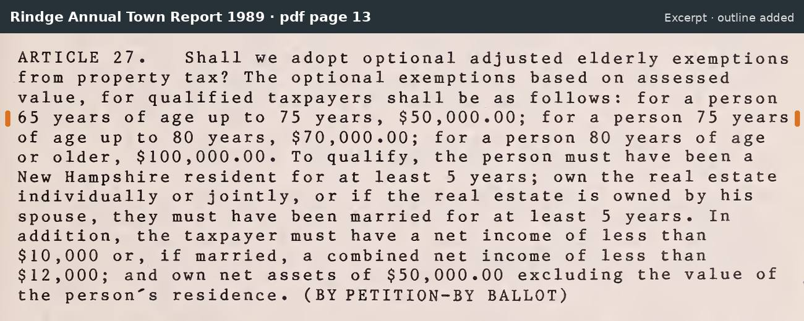
Open the image:1990 warrant, Article 27 (in the 1989 report)
Rindge Annual Town Report 1989, pdf page 13 · Excerpt (PDF) · Original


1997
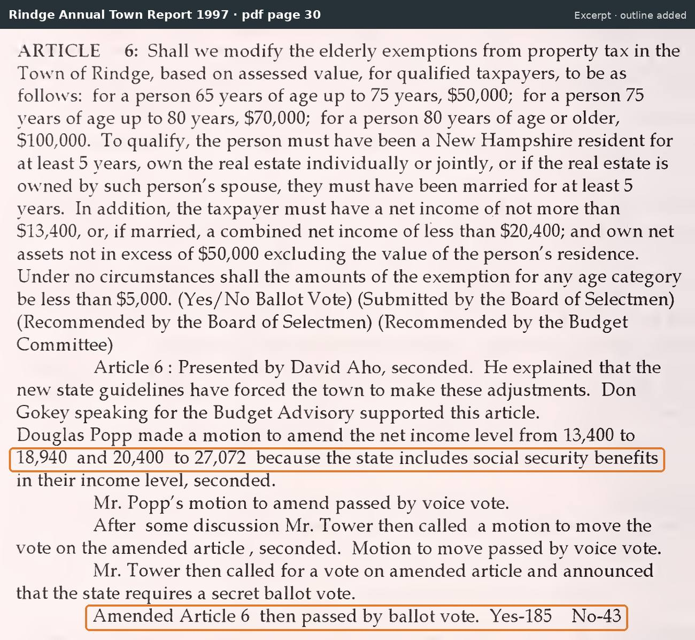
Open the image:1997 Town Meeting, amended Article 6: Yes 185, No 43
Rindge Annual Town Report 1997, pdf page 30 · Excerpt (PDF) · Original
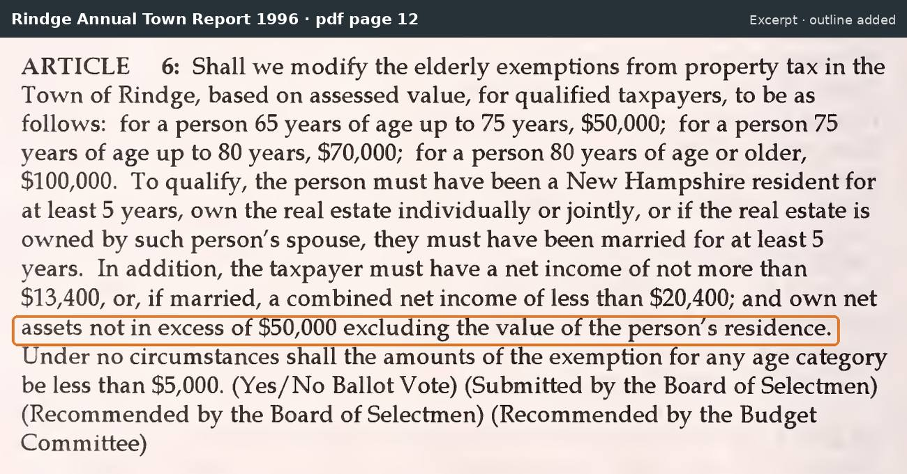
Open the image:1997 warrant, Article 6 (in the 1996 report)
Rindge Annual Town Report 1996, pdf page 12 · Excerpt (PDF) · Original


2006
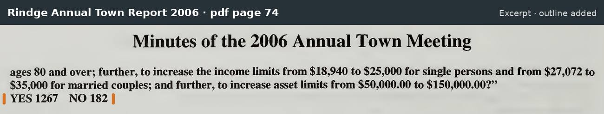
Open the image:2006 Town Meeting, Article 27: Yes 1,267, No 182
Rindge Annual Town Report 2006, pdf page 74 · Excerpt (PDF) · Original
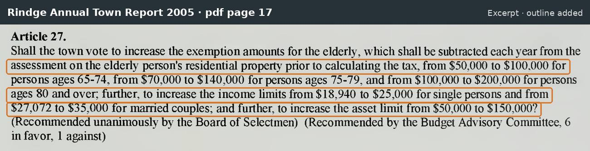
Open the image:2006 warrant, Article 27 (in the 2005 report)
Rindge Annual Town Report 2005, pdf page 17 · Excerpt (PDF) · Original
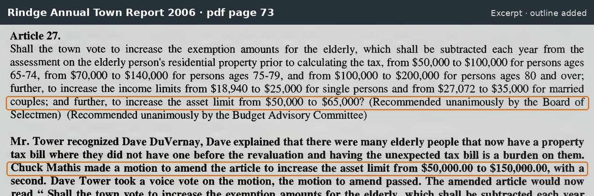
Open the image:2006 deliberative session minutes, Article 27 (asset limit amended from $65,000 to $150,000)
Rindge Annual Town Report 2006, pdf page 73 · Excerpt (PDF) · Original


2012
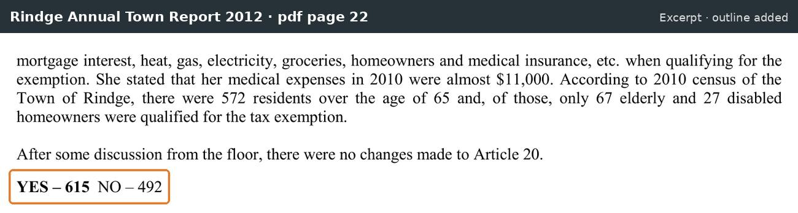
Open the image:2012 Town Meeting, Article 20: Yes 615, No 492
Rindge Annual Town Report 2012, pdf page 22 · Excerpt (PDF) · Original
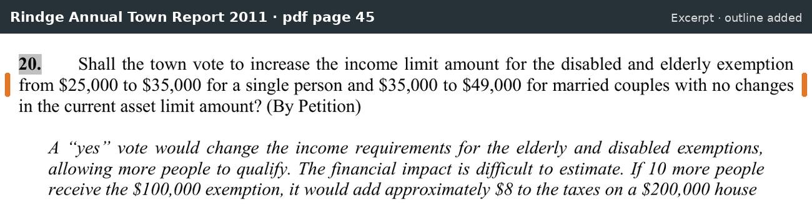
Open the image:2012 warrant, Article 20 (in the 2011 report)
Rindge Annual Town Report 2011, pdf page 45 · Excerpt (PDF) · Original
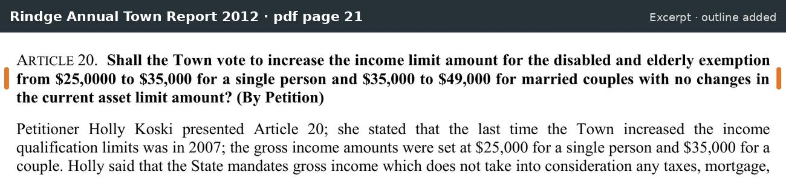
Open the image:2012 deliberative session minutes, Article 20
Rindge Annual Town Report 2012, pdf page 21 · Excerpt (PDF) · Original


2020
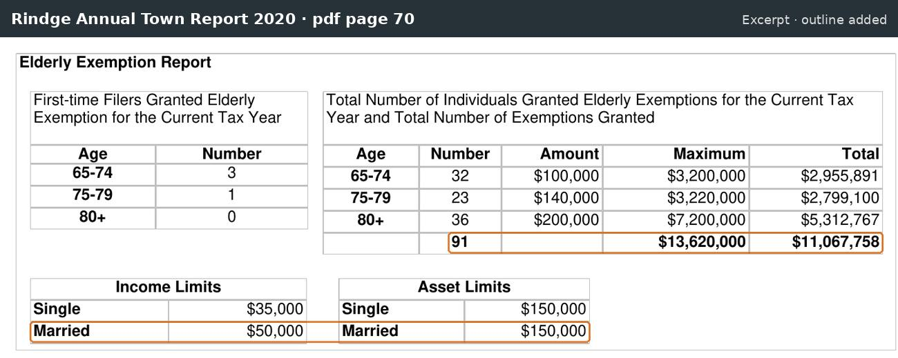
Open the image:2020 MS-1, Elderly Exemption Report
Rindge Annual Town Report 2020, pdf page 70 · Excerpt (PDF) · Original
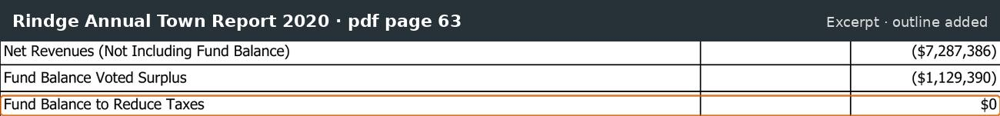
Open the image:2020 tax rate calculation: "Fund Balance to Reduce Taxes"
Rindge Annual Town Report 2020, pdf page 63 · Excerpt (PDF) · Original


2021
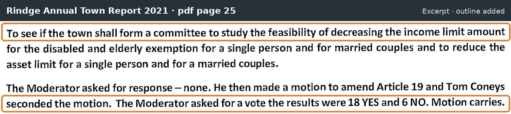
Open the image:2021 deliberative session: amended into a study committee, 18 to 6
Rindge Annual Town Report 2021, pdf page 25 · Excerpt (PDF) · Original
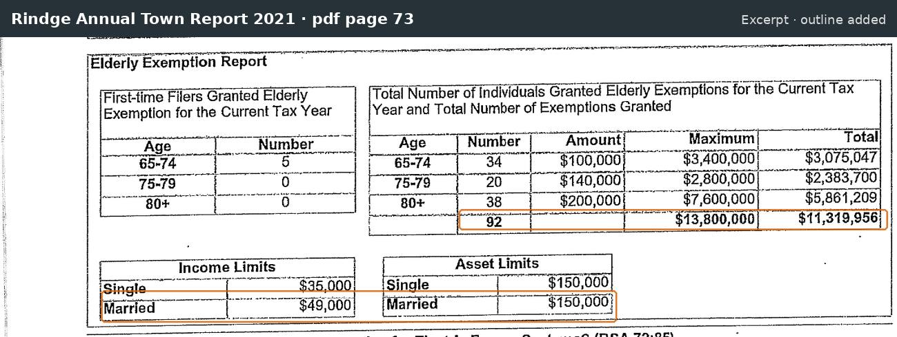
Open the image:2021 MS-1, Elderly Exemption Report
Rindge Annual Town Report 2021, pdf page 73 · Excerpt (PDF) · Original


2022
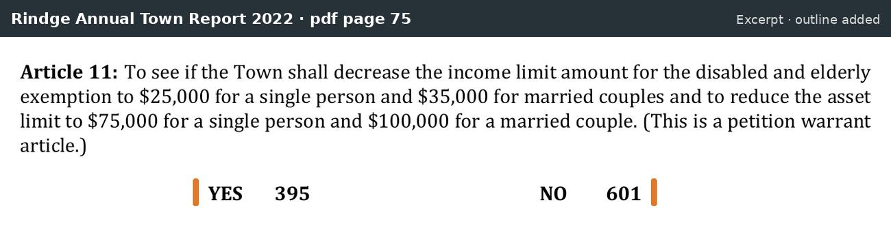
Open the image:2022 Town Meeting, Article 11: Yes 395, No 601
Rindge Annual Town Report 2022, pdf page 75 · Excerpt (PDF) · Original
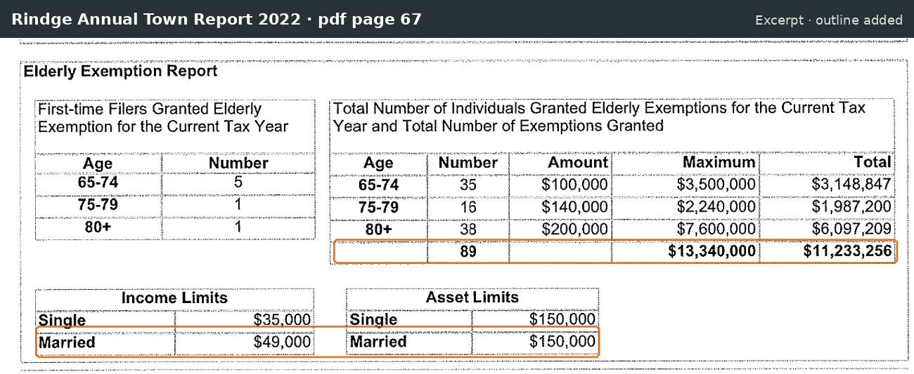
Open the image:2022 MS-1, Elderly Exemption Report
Rindge Annual Town Report 2022, pdf page 67 · Excerpt (PDF) · Original


2023
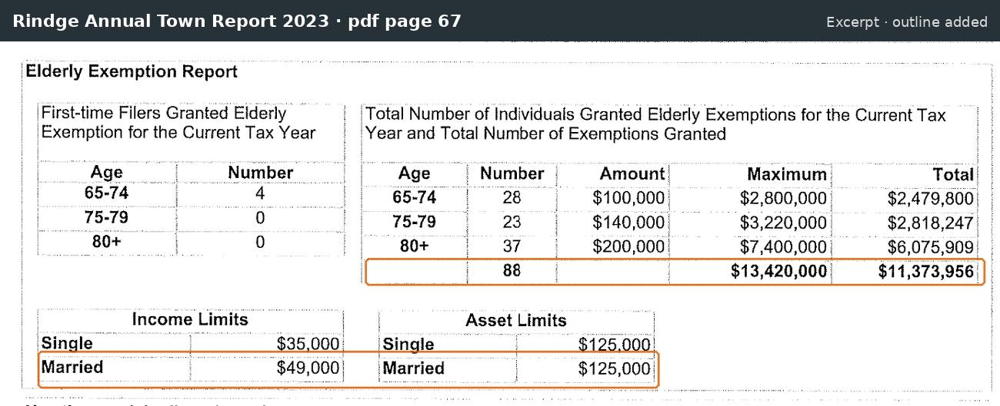
Open the image:2023 MS-1, Elderly Exemption Report
Rindge Annual Town Report 2023, pdf page 67 · Excerpt (PDF) · Original

2024
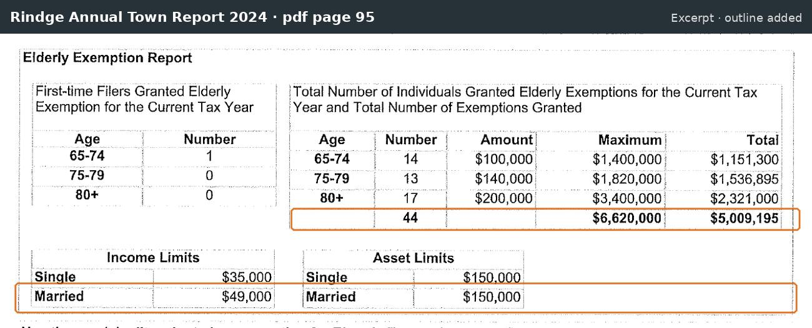
Open the image:2024 MS-1, Elderly Exemption Report
Rindge Annual Town Report 2024, pdf page 95 · Excerpt (PDF) · Original
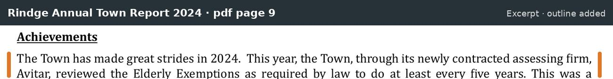
Open the image:2024 report, Select Board: Avitar's review of elderly exemptions
Rindge Annual Town Report 2024, pdf page 9 · Excerpt (PDF) · Original
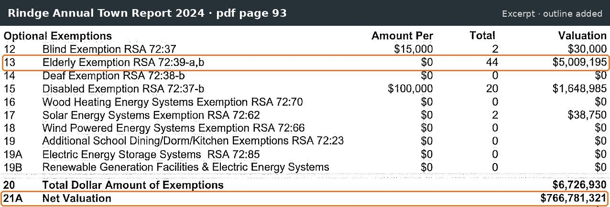
Open the image:2024 MS-1: elderly exemption total and net valuation
Rindge Annual Town Report 2024, pdf page 93 · Excerpt (PDF) · Original
- Open the image:
NH DRA 2024 Municipal Tax Rates, Rindge row
NH DRA, 2024 Municipal Tax Rates, pdf page 7 · Excerpt (PDF) · Original


2025
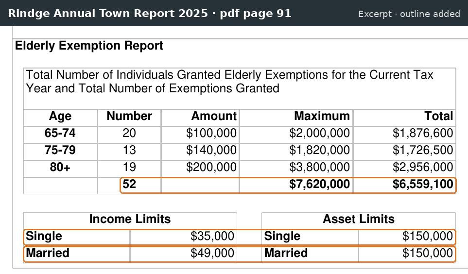
Open the image:2025 MS-1, Elderly Exemption Report
Rindge Annual Town Report 2025, pdf page 91 · Excerpt (PDF) · Original
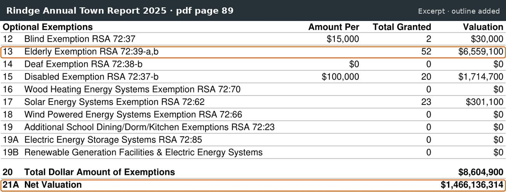
Open the image:2025 MS-1: elderly exemption total and net valuation
Rindge Annual Town Report 2025, pdf page 89 · Excerpt (PDF) · Original
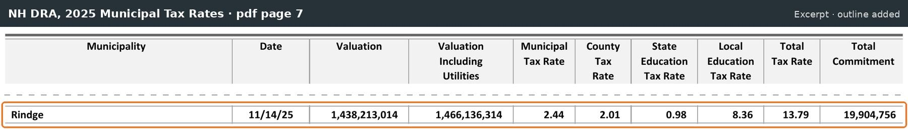
Open the image:NH DRA 2025 Municipal Tax Rates, Rindge row
NH DRA, 2025 Municipal Tax Rates, pdf page 7 · Excerpt (PDF) · Original
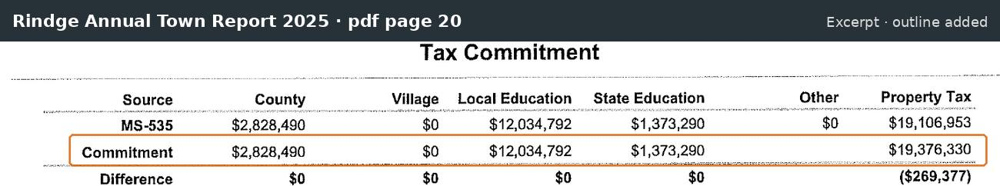
Open the image:2025 report, MS-535 Tax Commitment panel (2024 tax year)
Rindge Annual Town Report 2025, pdf page 20 · Excerpt (PDF) · Original
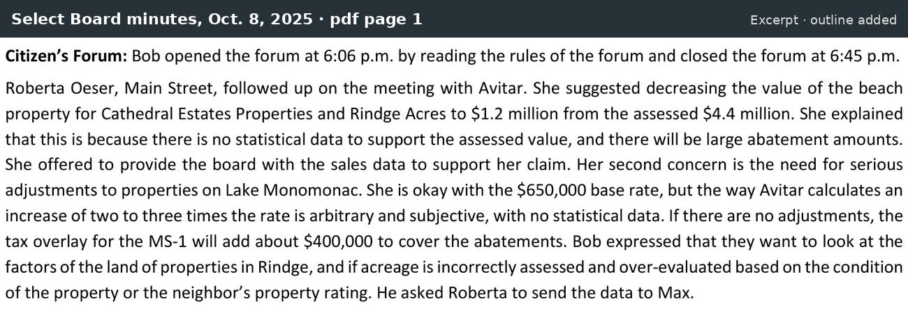
Open the image:Select Board minutes, Oct. 8, 2025: "about $400,000"
Select Board minutes, Oct. 8, 2025, pdf page 1 · Document (PDF) · Original
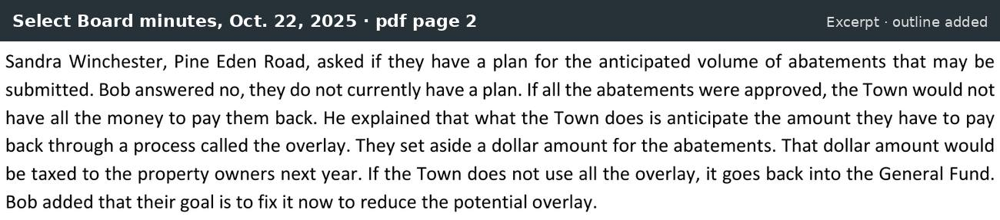
Open the image:Select Board minutes, Oct. 22, 2025: overlay and the General Fund
Select Board minutes, Oct. 22, 2025, pdf page 2 · Document (PDF) · Original
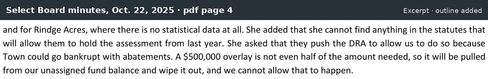
Open the image:Select Board minutes, Oct. 22, 2025: "$500,000 overlay"
Select Board minutes, Oct. 22, 2025, pdf page 4 · Document (PDF) · Original


Bordering towns
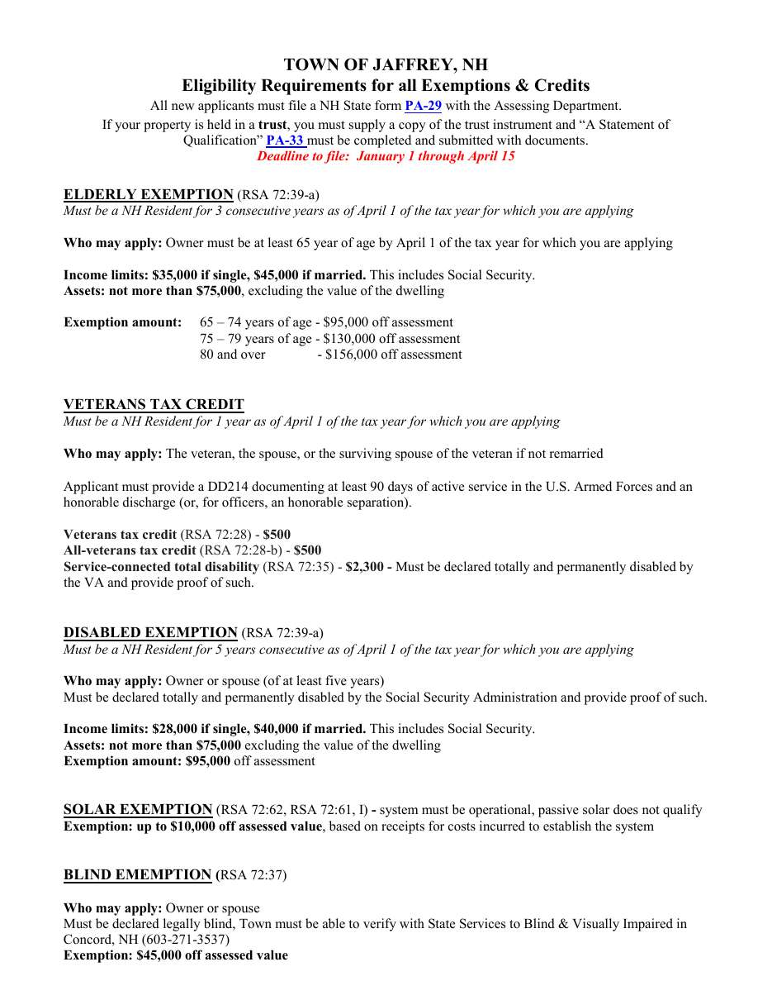
Open the page:Town of Jaffrey, NH, Eligibility Requirements for all Exemptions & Credits
Town PDF, created/modified July 30, 2026 · Document (PDF) · Original
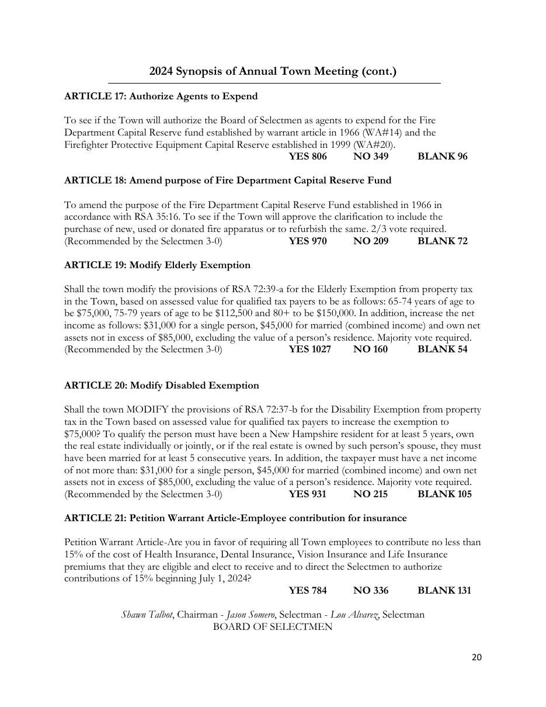
Open the page:


State law: full text
The New Hampshire statutes this site relies on, as saved on this site (plain text) with a link to the official version.
RSA 39:3 (petitioned warrant articles)
Plain text on this site · Official text (NH General Court)
Section 39:3 Articles. TITLE III TOWNS, CITIES, VILLAGE DISTRICTS, AND UNINCORPORATED PLACES CHAPTER 39 TIME FOR HOLDING TOWN MEETINGS AND WARNING THEREOF Section 39:3 Articles. --> TITLE III TOWNS, CITIES, VILLAGE DISTRICTS, AND UNINCORPORATED PLACES CHAPTER 39 TIME FOR HOLDING TOWN MEETINGS AND WARNING THEREOF Section 39:3 39:3 Articles. – Upon the written application of 25 or more registered voters or 2 percent of the registered voters in town, whichever is less, although in no event shall fewer than 10 registered voters be sufficient, presented to the selectmen or one of them not later than the fifth Tuesday before the day prescribed for an annual meeting, the selectmen shall insert in their warrant for such meeting the petitioned article with only such minor textual changes as may be required. Such corrections shall not in any way change the intended effect of the article as presented in the original language of the petition. For the purposes of this section, the number of registered voters in a town shall be the number of voters registered prior to the last state general election. The right to have an article inserted in the warrant conferred by this section shall not be invalidated by the provisions of RSA 32. In towns with fewer than 10,000 inhabitants upon the written application of 50 or more voters or 1/4 of the voters in town, whichever is fewer, and in towns with 10,000 or more inhabitants upon the written application of 5 percent of the registered voters in the town, so presented not less than 60 days before the next annual meeting, the selectmen shall warn a special meeting to act upon any question specified in such application. The checklist for an annual or special town meeting shall be corrected by the supervisors of the checklist as provided in RSA 654:25-31. Those persons qualified to vote whose names are on the corrected checklist shall be entitled to vote at the meeting. The same checklist used at a recessed town meeting shall be used at any reconvened session of the same town meeting. In no event shall a special town meeting be held on the biennial election day. The written application for a petitioned article for an annual or special meeting may identify one of the registered voters on the application as the primary petitioner. If no primary petitioner is identified, the primary petitioner shall be the first registered voter listed on the written application. Source. RS 32:3. CS 34:3. GS 35:3. GL 38:3. PS 41:3. PL 45:3. 1937, 40:1. RL 57:3. 1947, 21:1. RSA 39:3. 1969, 59:1. 1971, 79:1. 1975, 160:1. 1981, 454:1. 1987, 299:1. 1990, 192:1. 1991, 223:1; 370:5. 1994, 197:1, eff. July 23, 1994. 1998, 194:1, eff. Aug. 17, 1998. 2018, 325:1, eff. Aug. 24, 2018. 2025, 173:1, eff. Sept. 13, 2025.
RSA 40:13 (official ballot / SB2 town meetings)
Plain text on this site · Official text (NH General Court)
Section 40:13 Use of Official Ballot. TITLE III TOWNS, CITIES, VILLAGE DISTRICTS, AND UNINCORPORATED PLACES CHAPTER 40 GOVERNMENT OF TOWN MEETING Section 40:13 Use of Official Ballot. --> TITLE III TOWNS, CITIES, VILLAGE DISTRICTS, AND UNINCORPORATED PLACES CHAPTER 40 GOVERNMENT OF TOWN MEETING Optional Form of Meeting-Official Ballot Referenda Section 40:13 40:13 Use of Official Ballot. – I. Notwithstanding RSA 39:3-d, RSA 40:4-e, or any other provision of law, any local political subdivision as defined in RSA 40:12 which has adopted this subdivision shall utilize the official ballot for voting on all issues before the voters. II. The warrant for any annual meeting shall prescribe the place, day and hour for each of 2 separate sessions of the meeting, and notice shall be given as otherwise provided in this section. Final budgets and ballot questions shall be printed in the annual report made available to the legislative body at least one week before the date of the second session of the annual meeting. II-a. Notwithstanding any other provision of law, all local political subdivisions which adopt this subdivision, who have not adopted an April or May election date under RSA 40:14, X, shall comply with the following schedule pertaining to notice, petitioned articles, hearings, and warrants for the annual meeting: (a) The final date for posting notice of budget hearings under RSA 32:5 and RSA 195:12 and hearings under RSA 33:8-a shall be the second Tuesday in January. (b) The "budget submission date" as defined in RSA 273-A:1, III and the final date for submission of petitioned articles under RSA 39:3 and RSA 197:6 shall be the second Tuesday in January, provided however, that if a petitioned article proposes a bond governed by RSA 33:8-a, the deadline shall be the preceding Friday. (c) Budget hearings under RSA 32:5 and RSA 195:12 and hearings under RSA 33:8-a shall be held on or before the third Tuesday in January. One or more supplemental budget hearings may be held at any time before the first session of the annual meeting, subject to the 7-day notice requirement in RSA 32:5. If the first hearing or any supplemental hearing is recessed to a later date or time, additional notice shall not be required for a supplemental session if the date, time, and place of the supplemental session are made known at the original hearing. In a political subdivision that has adopted a municipal budget committee pursuant to RSA 32:14, the last day for the budget committee to deliver copies of the final budget and recommendations to the governing body pursuant to RSA 32:16, IV shall be the Thursday before the last Monday in January. (d) Warrants under RSA 39:5 and RSA 197:7 and budgets shall be posted and copies available to the general public on or before the last Monday in January. II-b. Notwithstanding any other provision of law, all political subdivisions which hold their annual meetings in April shall comply with the following schedule pertaining to notice, petitioned articles, hearings, and warrants for the annual meeting. (a) The final date for posting notice of budget hearings under RSA 32:5 and RSA 195:12 and hearings under RSA 33:8-a shall be the second Tuesday in February. (b) The "budget submission date" as defined in RSA 273-A:1, III and the final date for submission of petitioned articles under RSA 39:3 and RSA 197:6 shall be the second Tuesday in February, provided however, that if a petitioned article proposes a bond governed by RSA 33:8-a, the deadline shall be the preceding Friday. (c) Budget hearings under RSA 32:5 and RSA 195:12 and hearings under RSA 33:8-a shall be held on or before the third Tuesday in February. One or more supplemental budget hearings may be held at any time before the first session of the annual meeting, subject to the 7-day notice requirement in RSA 32:5. If the first hearing or any supplemental hearing is recessed to a later date or time, additional notice shall not be required for a supplemental session if the date, time, and place of the supplemental session are made known at the original hearing. In a political subdivision that has adopted a municipal budget committee pursuant to RSA 32:14, the last day for the budget committee to deliver copies of the final budget and recommendations to the governing body pursuant to RSA 32:16, IV shall be the Thursday before the last Monday in February. (d) Warrants under RSA 39:5 and RSA 197:7 and budgets shall be posted and copies available to the general public on or before the last Monday in February. II-c. Notwithstanding any other provision of law, all political subdivisions which hold their annual meetings in May shall comply with the following schedule pertaining to notice, petitioned articles, hearings, and warrants for the annual meeting: (a) The final date for posting notice of budget hearings under RSA 32:5 and RSA 195:12 and hearings under RSA 33:8-a shall be the second Tuesday in March. (b) The "budget submission date" as defined in RSA 273-A:1, III and the final date for submission of petitioned articles under RSA 39:3 and RSA 197:6 shall be the second Tuesday in March, provided however, that if a petitioned article proposes a bond governed by RSA 33:8-a, the deadline shall be the preceding Friday. (c) Budget hearings under RSA 32:5 and RSA 195:12 and hearings under RSA 33:8-a shall be held on or before the third Tuesday in March. One or more supplemental budget hearings may be held at any time before the first session of the annual meeting, subject to the 7-day notice requirement in RSA 32:5. If the first hearing or any supplemental hearing is recessed to a later date or time, additional notice shall not be required for a supplemental session if the date, time, and place of the supplemental session are made known at the original hearing. In a political subdivision that has adopted a municipal budget committee pursuant to RSA 32:14, the last day for the budget committee to deliver copies of the final budget and recommendations to the governing body pursuant to RSA 32:16, IV shall be the Thursday before the last Monday in March. (d) Warrants under RSA 39:5 and RSA 197:7 and budgets shall be posted and copies available to the general public on or before the last Monday in March. II-d. The voter checklist shall be updated in accordance with RSA 669:5 for each session of the annual meeting. III. The first session of the annual meeting, which shall be for the transaction of all business other than voting by official ballot, shall be held between the first and second Saturdays following the last Monday in January, inclusive of those Saturdays; between the first and second Saturdays following the last Monday in February, inclusive of those Saturdays; or between the first and second Saturdays following the last Monday in March, inclusive of those Saturdays at a time prescribed by the local political subdivision's governing body. IV. The first session of the meeting, governed by the provisions of RSA 40:4, 40:4-a, 40:4-b, 40:4-f, and 40:6-40:10, shall consist of explanation, discussion, and debate of each warrant article, including warrant articles pertaining to the operating budget and the default budget. A vote to restrict reconsideration shall be deemed to prohibit any further action on the restricted article until the second session, and RSA 40:10, II shall not apply. Warrant articles may be amended at the first session, subject to the following limitations: (a) Warrant articles whose wording is prescribed by law shall not be amended. (b) Warrant articles that are amended shall be placed on the official ballot for a final vote on the main motion, as amended. (c) No warrant article shall be amended to eliminate the subject matter of the article. An amendment that changes the dollar amount of an appropriation in a warrant article shall not be deemed to violate this subparagraph. V. [Repealed.] V-a. The legislative body of any town, school district, or village district may vote to require that all votes by an advisory budget committee, a town, school district, or village district budget committee, and the governing body or, in towns, school districts, or village districts without a budget committee, all votes of the governing body relative to budget items or any warrant articles or ballot questions shall be recorded votes and the numerical tally of any such vote shall be printed in the town, school district, or village district warrant next to the affected warrant article or on the ballot next to the affected ballot question. Unless the legislative body has voted otherwise, if a town or school district has not voted to require such tallies to be printed in the town or school district warrant next to the affected warrant article or on the ballot next to the affected ballot question, the governing body may do so on its own initiative. VI. All warrant articles shall be placed on the official ballot for a final vote, including warrant articles as amended by the first session. All special warrant articles shall be accompanied on the ballot by recommendations as required by RSA 32:5, V, concerning any appropriation or appropriation as amended. For any article that proposes the adoption or amendment of an ordinance, a topical description of the substance of the ordinance or amendment, which shall be neutral in its language, may be placed on the official ballot instead of the full text of the ordinance or amendment, subject to the provisions of paragraphs VII-a and VIII-a. With respect to the adoption or amendment of a zoning ordinance, historic district ordinance, or building code, the provisions of RSA 675:3 shall govern to the extent they are inconsistent with anything contained in this paragraph or in paragraph VII-a or VIII-a. VII. The second session of the annual meeting, which is the official ballot voting day as defined in RSA 652:16-g, to elect officers of the local political subdivision by official ballot, to vote on questions required by law to be inserted on said official ballot, and to vote on all warrant articles from the first session on official ballot, shall be held on the second Tuesday in March, the second Tuesday in April, or the second Tuesday in May, as applicable unless it is postponed in accordance with RSA 40:4, II(b) and RSA 669:1. Notwithstanding RSA 669:1, 670:1, or 671:2, the second session shall be deemed the annual election date for purposes of all applicable election statutes including, but not limited to, RSA 669:5, 669:19, 669:30, 670:3, 670:4, 670:11, 671:15, 671:19, and 671:30 through 32; and votes on zoning ordinances, historic district ordinances, and building codes under RSA 675. VII-a. When a topical description of the substance of a proposed ordinance or amendment to an ordinance is to be placed on the official ballot, an official copy of the proposed ordinance or amendment, including any amendment to the proposal adopted the first session, shall be placed on file and made available to the public at the office of the clerk of the political subdivision not later than one week prior to the date of the second session of the annual meeting. An official copy of the proposed ordinance or amendment shall be on display for the voters at the meeting place on the date of the meeting. VIII. The clerk of the local political subdivision shall prepare an official ballot, which may be separate from the official ballot used to elect officers, for all warrant articles. Wording shall be substantively the same as the main motion, as it was made or amended at the first session, with only such minor textual changes as may be required to cast the motion in the form of a question to the voters. VIII-a. A question as to the adoption or amendment of an ordinance shall be in substantially the following form: "Are you in favor of the adoption of (amendment to) the ordinance as proposed by the selectmen as follows: (here insert text or topical description of proposed ordinance or amendment)?" In the event that there shall be more than a single proposed amendment to an ordinance to be submitted to the voters at any given meeting, the issue as to the several amendments shall be put in the following manner: "Are you in favor of the adoption of Amendment No. ___ to the ordinance as proposed by the selectmen as follows: (here insert text or topical description of proposed amendment)?" IX. (a) "Operating budget" as used in this subdivision means "budget," as defined in RSA 32:3, III, exclusive of "special warrant articles," as defined in RSA 32:3, VI, and exclusive of other appropriations voted separately. (b) "Default budget" as used in this subdivision means the amount of the same appropriations as contained in the operating budget authorized for the previous year, reduced and increased, as the case may be, by debt service, contracts, and other obligations previously incurred or mandated by law, and reduced by one-time expenditures contained in the operating budget and by salaries and benefits of positions that have been eliminated in the proposed budget. For the purposes of this paragraph, one-time expenditures shall be appropriations not likely to recur in the succeeding budget, and eliminated positions shall not include vacant positions under recruitment or positions redefined in the proposed operating budget, as determined by the governing body, unless the provisions of RSA 40:14-b apply, of the local political subdivision. In calculating the default budget amount, the governing body shall follow the statutory formula which may result in a higher or lower amount than the proposed operating budget. (c) "Contracts" as used in this subdivision means contracts previously approved, in the amount so approved, by the legislative body in either the operating budget authorized for the previous year or in a separate warrant article for a previous year. X. If no operating budget article is adopted, the local political subdivision either shall be deemed to have approved the default budget or the governing body may hold a special meeting pursuant to paragraph XVI to take up the issue of a revised operating budget only; provided that RSA 31:5 and RSA 197:3 shall not apply to such a special meeting. If no operating budget article is adopted the estimated revenues shall nevertheless be deemed to have been approved. XI. (a) The default budget shall be disclosed and presented for questions and discussion at the first budget hearing held pursuant to RSA 32:5 or RSA 197:6. The governing body, unless the provisions of RSA 40:14-b apply , shall complete a default budget form created by the department of revenue administration to demonstrate how the default budget amount was calculated. The line item details for changes under subparagraph (2) shall be available for inspection by voters. The form and associated calculations shall, at a minimum, include the following: (1) Appropriations contained in the previous year's operating budget; (2) Reductions and increases to the previous year's operating budget including identification of specific items that constitute a change by account code, and the reasons for each change; (3) One-time expenditures as defined under subparagraph IX(b); and (4) Reductions for eliminated positions and benefit expenditures as defined under subparagraph IX(b). (b) This amount shall not be amended by the legislative body. However, this amount may be adjusted by the governing body, unless the provisions of RSA 40:14-b apply, acting on relevant new information at any time before the ballots are printed, provided the governing body, unless the provisions of RSA 40:14-b apply, completes an amended default budget form. (c) The wording of the second session ballot question concerning the operating budget shall be as follows: "Shall the (local political subdivision) raise and appropriate as an operating budget, not including appropriations by special warrant articles and other appropriations voted separately, the amounts set forth on the budget posted with the warrant or as amended by vote of the first session, for the purposes set forth therein, totaling $ ____________? Should this article be defeated, the default budget shall be $ __________, which is the same as last year, with certain adjustments required by previous action of the (local political subdivision) or by law; or the governing body may hold one special meeting, in accordance with RSA 40:13, X and XVI, to take up the issue of a revised operating budget only." XI-a. If a political subdivision maintains a separate fund for the revenues and expenditures related to the operation, maintenance, and improvement of a water or sewer system, and if any appropriation for such fund is to be raised through user fees or charges and is included in a warrant article separate from the operating budget, the warrant article may include a default amount for such appropriation, which shall be deemed to have been approved if the proposed appropriation is not approved. The default amount shall be determined by the governing body, or by the budget committee if RSA 40:14-b applies, and shall equal the amount of the same appropriation for the preceding fiscal year, reduced and increased, as the case may be, by debt service, contracts, and other obligations previously incurred or mandated by law, and reduced by one-time expenditures contained in the previous year's appropriation. The warrant article shall state the default amount for the appropriation and shall state that if the appropriation proposed in the article is not approved, the default amount shall be deemed to have been approved. XII. Voting at the second session shall conform to the procedures for the nonpartisan ballot system as set forth in RSA 669:19-29, RSA 670:5-7 and RSA 671:20-30, including all requirements pertaining to absentee voting, polling place, and polling hours. XIII. Approval of all warrant articles shall be by simple majority except for questions which require a 2/3 vote by law, contract, or written agreement. XIV. Votes taken at the second session shall be subject to recount under RSA 669:30-33 and RSA 40:4-c. XV. Votes taken at the second session shall not be reconsidered. XVI. The warrant for any special meeting shall prescribe the date, place and hour for both a first and second session. The second session shall be warned for a date not fewer than 28 days nor more than 60 days following the first session. The first and second sessions shall conform to the provisions of this subdivision pertaining to the first and second sessions of annual meetings. Special meetings shall be subject to RSA 31:5, 39:3, 195:13, 197:2, and 197:3, provided that no more than one special meeting may be held to raise and appropriate money for the same question or issue in any one calendar year or fiscal year, whichever applies, and further provided that any special meeting held pursuant to paragraphs X and XI shall not be subject to RSA 31:5 and RSA 197:3 and shall not be counted toward the number of special meetings which may be held in a given calendar or fiscal year. XVII. Notwithstanding any other provision of law, if the sole purpose of a special meeting is to consider the adoption, amendment, or repeal of a zoning ordinance, historic district ordinance, or building code pursuant to RSA 675, including the adoption of an emergency zoning and planning ordinance pursuant to RSA 675:4-a, the meeting shall consist of only one session, which shall be for voting by official ballot on the proposed ordinance, code, amendment, or repeal. The warrant for the meeting shall be posted in accordance with RSA 39:5. Source. 1995, 164:1, eff. July 31, 1995. 1996, 276:1, 2, eff. June 10, 1996. 1997, 318:4, 5, 12, eff. Aug. 22, 1997. 1999, 86:1-3, eff. Aug. 2, 1999. 2000, 16:2, 3, 4, 5, eff. April 30, 2000. 2001, 71:5-7, eff. July 1, 2001. 2004, 219:1, eff. Aug. 10, 2004. 2007, 305:2, eff. Sept. 11, 2007. 2009, 2:2, eff. Feb. 20, 2009. 2010, 69:1, eff. July 18, 2010; 90:2-4, eff. July 24, 2010. 2011, 1:1, eff. Feb. 4, 2011; 57:1, eff. May 9, 2011. 2012, 217:2, eff. July 1, 2013. 2013, 116:1-3 eff. Aug. 24, 2013; 191:2, eff. Aug. 31, 2013. 2014, 7:1-4, eff. July 5, 2014; 190:1-3, 8-10, eff. Sept. 9, 2014. 2018, 241:1, 2, eff. Aug. 11, 2018; 313:1, 2, eff. Aug. 24, 2018. 2019, 192:2, eff. July 10, 2019. 2026, 149:3-5, eff. Aug. 12, 2026.
RSA 72:27-a (adopting and modifying exemptions)
Plain text on this site · Official text (NH General Court)
Section 72:27-a Procedure for Adoption, Modification, or Rescission. TITLE V TAXATION CHAPTER 72 PERSONS AND PROPERTY LIABLE TO TAXATION Section 72:27-a Procedure for Adoption, Modification, or Rescission. --> TITLE V TAXATION CHAPTER 72 PERSONS AND PROPERTY LIABLE TO TAXATION Property Taxes Section 72:27-a 72:27-a Procedure for Adoption, Modification, or Rescission. – I. Any town or city may adopt the provisions of RSA 72:28, RSA 72:28-b, RSA 72:29-a, RSA 72:35, RSA 72:37, RSA 72:37-b, RSA 72:38-b, RSA 72:39-a, RSA 72:62, RSA 72:66, RSA 72:70, RSA 72:76, RSA 72:82, RSA 72:85, or RSA 72:87, in the following manner: (a) In a town, other than a town that has adopted a charter pursuant to RSA 49-D, the question shall be placed on the warrant of a special or annual town meeting, by the governing body or by petition pursuant to RSA 39:3. (b) In a city or town that has adopted a charter pursuant to RSA 49-C or RSA 49-D, the legislative body may consider and act upon the question in accordance with its normal procedures for passage of resolutions, ordinances, and other legislation. In the alternative, the legislative body of such municipality may vote to place the question on the official ballot for any regular municipal election. II. The vote shall specify the provisions of the property tax exemption or credit, the amount of such exemption or credit, and the manner of its determination, as listed in paragraph I. If a majority of those voting on the question vote "yes," the exemption or credit shall take effect within the town or city, on the date set by the governing body, or in the tax year beginning April 1 following its adoption, whichever shall occur first. III. A municipality may modify, if applicable, or rescind the exemption or credits provided in paragraph I in the manner described in this section. IV. An amendment to a statutory provision listed in paragraph I related to an exemption or credit amount or to the eligibility or application of an exemption or credit, shall apply in a municipality which previously adopted the provision only after the municipality complies with the procedure in this section, unless otherwise expressly required by law. Source. 2003, 299:1; 299:23. 2004, 170:3. 2008, 224:3, eff. July 1, 2008. 2016, 217:2, eff. Aug. 8, 2016. 2017, 179:1, eff. Aug. 28, 2017. 2019, 327:3, eff. Oct. 15, 2019. 2021, 200:2, Pt. II, Sec. 1, eff. Oct. 9, 2021.
RSA 72:33 (applying for exemptions)
Plain text on this site · Official text (NH General Court)
Section 72:33 Application for Exemption or Tax Credit. TITLE V TAXATION CHAPTER 72 PERSONS AND PROPERTY LIABLE TO TAXATION Section 72:33 Application for Exemption or Tax Credit. --> TITLE V TAXATION CHAPTER 72 PERSONS AND PROPERTY LIABLE TO TAXATION Property Taxes Section 72:33 72:33 Application for Exemption or Tax Credit. – I. No person shall be entitled to the exemptions or tax credits provided by RSA 72:28, 28-b, 28-c, 29-a, 30, 31, 32, 35, 36-a, 37, 37-a, 37-b, 38-b, 39-b, 62, 66, and 70 unless the person has filed with the selectmen or assessors, by April 15 preceding the setting of the tax rate, a permanent application therefor, signed under penalty of perjury, on a form approved and provided by the commissioner of revenue administration, showing that the applicant is the true and lawful owner of the property on which the exemption or tax credit is claimed and that the applicant was duly qualified upon April 1 of the year in which the exemption or tax credit is first claimed, or, in the case of financial qualifications, that the applicant is duly qualified at the time of application. The form shall include the following and such other information deemed necessary by the commissioner: (a) Instructions on completing and filing the form, including an explanation of the grounds for requesting tax exemptions and credits pursuant to RSA 72. (b) Sections for information concerning the applicant, the property for which the relief is sought, and other properties owned by the person applying. (c) A section explaining the appeal procedure and stating the appeal deadline in the event the municipality denies the tax relief request in whole or in part. (d) A place for the applicant's signature with a certification by the person applying that the application has a good faith basis and the facts in the application are true. I-a. If any person, otherwise qualified to receive an exemption or credit, shall satisfy the selectmen or assessors that he or she was prevented by accident, mistake, or misfortune from filing a permanent application or amended permanent application on or before April 15 of the year in which he or she desires the exemption to begin, said officials may receive the application at a later date and grant an exemption or credit for that year; but no such application shall be received or exemption or credit granted after the local tax rate has been approved for that year. I-b. Notwithstanding the April 15 application deadline in paragraph I, a person may apply for the tax credit for combat service under RSA 72:28-c at any point during the tax year in which the person is engaged in combat service. If the application is received and granted after the tax rate for the city or town is set, the credit shall be applied to the balance of tax payments due for that year. If a person is deemed eligible for the tax credit after taxes have been billed and paid for the tax year in which the person served, the credit shall be applied in the following year. II. Any person who changes residence after filing such a permanent application shall file an amended permanent application on or before December 1 immediately following the change of residence. The filing of the permanent application shall be sufficient for said persons to receive these exemptions or tax credits on an annual basis so long as the applicant does not change residence. III. If the selectmen or assessors are satisfied that the applicant has willfully made any false statement in the application to obtain an exemption or tax credit, they may refuse to grant the exemption or tax credit. IV. [Repealed.] V. In addition to the above requirements, applicants for exemption who claim ownership pursuant to RSA 72:29, VI shall file with their application an additional statement signed under penalty of perjury, on a form approved and provided by the commissioner of revenue administration, showing they meet the requirements of RSA 72:29, VI. VI. The assessing officials may require applicants for any exemption or tax credit to file the information listed in RSA 72:34, or the statement required by RSA 72:33, V periodically but no more frequently than annually. Failure to file such periodic statements may, at the discretion of the assessing officials, result in a loss of the exemption or tax credit for that year. Source. 1947, 240:1, par. 29-d. RSA 72:33. 1969, 55:1. 1973, 544:8. 1977, 502:1. 1983, 155:8; 385:1. 1987, 325:1. 1991, 70:14. 1994, 102:2; 390:3, 8. 1995, 265:3, 20. 1996, 140:7. 1997, 281:1. 2003, 131:1; 299:6, 25, 26. 2007, 182:3, eff. April 1, 2007. 2016, 217:6, eff. Aug. 8, 2016. 2018, 151:4, 5, eff. Jan. 1, 2019.
RSA 72:39-a (elderly exemption eligibility)
Plain text on this site · Official text (NH General Court)
Section 72:39-a Conditions for Elderly Exemption. TITLE V TAXATION CHAPTER 72 PERSONS AND PROPERTY LIABLE TO TAXATION Section 72:39-a Conditions for Elderly Exemption. --> TITLE V TAXATION CHAPTER 72 PERSONS AND PROPERTY LIABLE TO TAXATION Property Taxes Section 72:39-a 72:39-a Conditions for Elderly Exemption. – I. No exemption shall be allowed under RSA 72:39-b unless the person applying therefor: (a) Has resided in this state for at least 3 consecutive years preceding April 1 in the year in which the exemption is claimed. (b) Had in the calendar year preceding said April 1 a net income from all sources, or if married, a combined net income from all sources, of not more than the respective amount applicable to each age group as determined by the city or town for purposes of RSA 72:39-b. Under no circumstances shall the amount determined by the city or town be less than $13,400 for a single person or $20,400 for married persons. The net income shall be determined by deducting from all moneys received, from any source including social security or pension payments, the amount of any of the following or the sum thereof: (1) Life insurance paid on the death of an insured; (2) Expenses and costs incurred in the course of conducting a business enterprise; (3) Proceeds from the sale of assets. (c) Owns, on December 31 in the calendar year preceding said April 1, net assets not in excess of the amount determined by the city or town for purposes of RSA 72:39-b, excluding the value of the person's actual residence and the land upon which it is located up to the greater of 2 acres or the minimum single family residential lot size specified in the local zoning ordinance. The amount determined by the city or town shall not be less than $35,000. A city or town may set a combined net assets amount for married persons in such greater amount as the legislative body of the city or town may determine. "Net assets" means the value of all assets, tangible and intangible, minus the value of any good faith encumbrances. "Residence" means the housing unit, and related structures such as an unattached garage or woodshed, which is the person's principal home, and which the person in good faith regards as home to the exclusion of any other places where the person may temporarily live. "Residence" shall exclude attached dwelling units and unattached structures used or intended for commercial or other nonresidential purposes. II. Additional requirements for an exemption under RSA 72:39-b shall be that the property is: (a) Owned by the resident; or (b) Owned by a resident jointly or in common with the resident's spouse, either of whom meets the age requirement for the exemption claimed; or (c) Owned by a resident jointly or in common with a person not the resident's spouse, if the resident meets the applicable age requirement for the exemption claimed; or (d) Owned by a resident, or the resident's spouse, either of whom meets the age requirement for the exemption claimed, and when they have been married to each other for at least 5 consecutive years. III. Upon the death of an owner residing with a spouse pursuant to subparagraph II(b) or II(d), the combined net asset amount for married persons determined by the city or town shall continue to apply to the surviving spouse for the purpose of the exemption granted under RSA 72:39-b until the sale or transfer of the property by the surviving spouse or until the remarriage of the surviving spouse. Source. 1996, 140:1. 2003, 299:14, 15. 2004, 238:3. 2006, 212:1, eff. June 1, 2006. 2023, 39:3, eff. July 18, 2023.
RSA 72:39-b (elderly exemption amounts)
Plain text on this site · Official text (NH General Court)
Section 72:39-b Procedure for Adoption and Modification of Elderly Exemption. TITLE V TAXATION CHAPTER 72 PERSONS AND PROPERTY LIABLE TO TAXATION Section 72:39-b Procedure for Adoption and Modification of Elderly Exemption. --> TITLE V TAXATION CHAPTER 72 PERSONS AND PROPERTY LIABLE TO TAXATION Property Taxes Section 72:39-b 72:39-b Procedure for Adoption and Modification of Elderly Exemption. – I. A town or city may adopt or modify elderly exemptions by the procedure in RSA 72:27-a. II. An elderly exemption, based on assessed value for qualified taxpayers, may be granted for a different dollar amount determined by the town or city, to a person 65 years of age up to 75 years, to a person 75 years of age up to 80 years, and to a person 80 years of age or older. To qualify, the person must have been a New Hampshire resident for at least 3 consecutive years, own the real estate individually or jointly, or if the real estate is owned by such person's spouse, they must have been married to each other for at least 5 consecutive years. In addition, the taxpayer must have a net income in each applicable age group of not more than a dollar amount determined by the town or city of not less than $13,400 or, if married, a combined net income of not more than a dollar amount determined by the town or city of not less than $20,400; and own net assets not in excess of a dollar amount determined by the town or city of not less than $35,000 excluding the value of the person's residence or, if married, combined net assets not in excess of a dollar amount determined by the town or city of not less than $35,000 excluding the value of the residence. Under no circumstances shall the amounts of the exemption for any age category be less than $5,000. The combined net asset amount for married persons shall apply to a surviving spouse until the sale or transfer of the property by the surviving spouse or until the remarriage of the surviving spouse. Source. 1996, 140:1. 1997, 241:2. 2003, 299:16. 2004, 238:4. 2006, 212:2, eff. June 1, 2006.
RSA 76:6 (overlay for abatements)
Plain text on this site · Official text (NH General Court)
Section 76:6 Overlay. Fetched Oct 11, 2026 from https://gc.nh.gov/rsa/html/V/76/76-6.htm TITLE V TAXATION CHAPTER 76 APPORTIONMENT, ASSESSMENT AND ABATEMENT OF TAXES Section 76:6 Overlay. --> TITLE V TAXATION CHAPTER 76 APPORTIONMENT, ASSESSMENT AND ABATEMENT OF TAXES Assessment Section 76:6 76:6 Overlay. – In assessing such taxes the selectmen may assess a sum not exceeding 5 percent more than the amount of such tax, to answer any abatements that may be made, which shall be paid into the town treasury for the use of the town. But if the selectmen shall assess a sum exceeding that which they have a right to assess, such assessment shall be thereby rendered invalid only as to such excess. Source. RS 43:4. CS 45:4. GS 53:4. 1871, 9:1. GL 57:4. PS 59:3. PL 64:3. RL 77:3.
Data tables: Download data (PDF) · data.csv · data.json